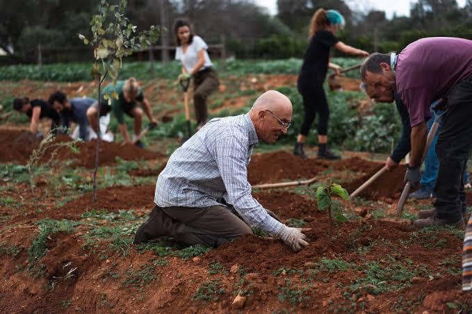
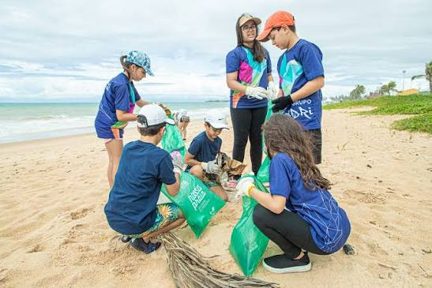
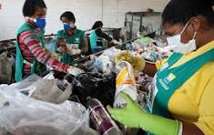

Plantio de Arvores

O projeto de plantio de árvores atua em parceria com moradores e escolas locais para recuperar áreas degradadas, transformando espaços urbanos e rurais em pontos de sombra, biodiversidade e ar mais limpo para toda a comunidade.
Coleta de Lixo

A coleta de lixo é realizada em mutirões periódicos por praias, rios e áreas urbanas, retirando resíduos que ameaçam a fauna local e reduzindo o impacto do descarte irregular no meio ambiente.
Reciclagem

No projeto de reciclagem, orientamos famílias e comerciantes sobre a separação correta de materiais, encaminhando os resíduos recicláveis para cooperativas parceiras e reduzindo o volume de lixo enviado a aterros.